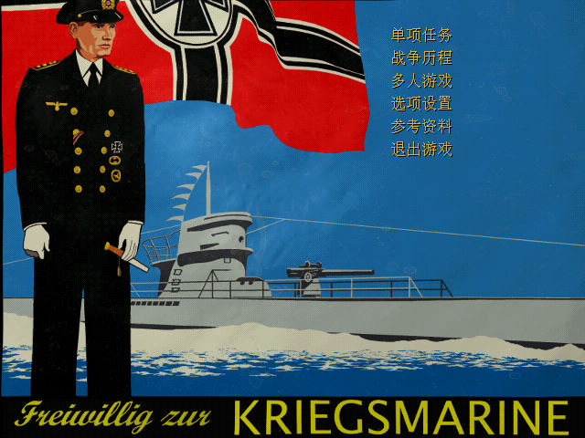
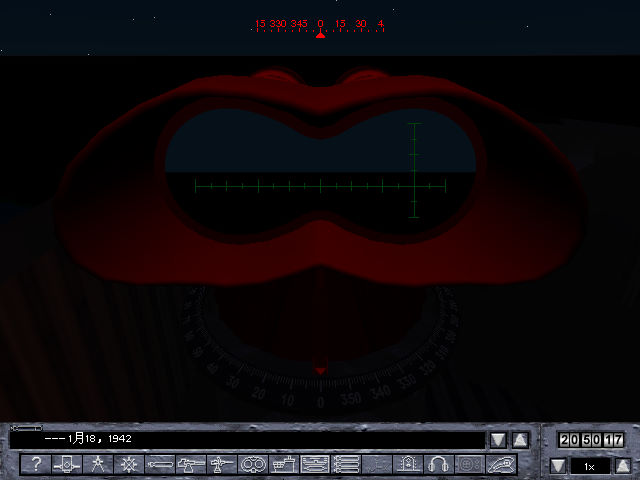

名稱：獵殺潛航2 (Silent Hunter 2，簡中版)
簡介：Ultimation 2001年出品的潛艦指揮作戰模擬遊戲，由Ubisoft代理發行，2002年進行
簡中化 [待補]。


備註：本版為簡中1.1版
保護：無
備註：非安裝移機者，必須設定下列Registry（假設安裝目錄在C:\SH2）：
[HKEY_LOCAL_MACHINE\SOFTWARE\Ultimation\SilentHunterII]
[HKEY_LOCAL_MACHINE\SOFTWARE\WOW6432Node\Ultimation\SilentHunterII]
"Directory"="C:\\SH2"
"Version"="1.0"
"Installation"="Full"
"Language"="English"
備註：VirtualBox無法執行，VMware會有殘影，請在Win64實機執行。